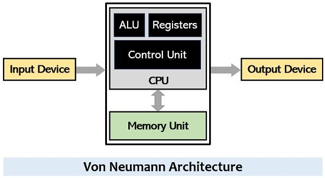

The Central Processing Unit executes programs, makes calculations, and has fast registers. Moore's Law says that the number of transistors in a circuit or CPU doubles every two years. It is composed of a Control Unit and an Arithmetic Logic Unit.
It's in charge of executing the fetch cycle:
It establishes the computer architecture.
There are two basic design possibilities: hardwired or microprogrammed.
It's implemented with logic gates: each machine language instruction has corresponding circuits.
It's faster and more efficient than microprogrammed CUs, but they're barely or not at all flexible.

Simple diagram of the von Neumann Architecture.
Note: "computer architecture" is interchangeable with "machine language".